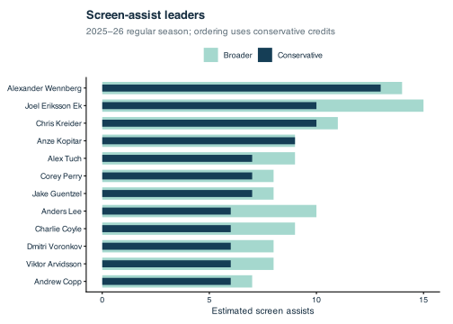
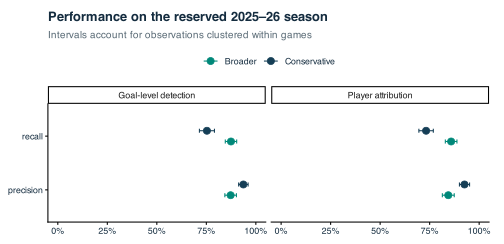
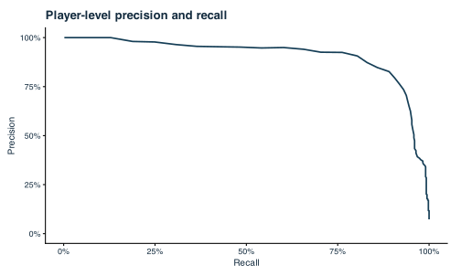
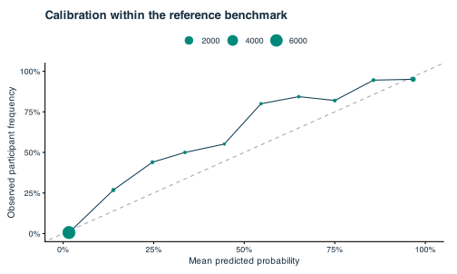
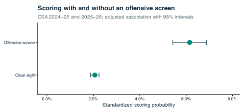

Research findings
We evaluate whether public replay tracking can identify offensive screens and the players responsible for them. The resulting estimates support the player rankings, while a separate analysis of Clear Sight Analytics shots examines how screening is associated with scoring after adjustment for observed shot context.
Player rankings
The rankings cover 2023–24 through 2025–26 and completed 2026–27 games through October 19, 2026. After empty-net and tracking exclusions, we evaluate — of — non-shootout goals. Each credited goal can be inspected in the replay explorer, including credits that qualify only under the broader definition. The figure below shows the leading totals for the most recent completed regular season; the rankings table also provides rates and adjustable exposure filters.

Screen detection and player attribution
We develop the detector on 2023–24, select its model and thresholds on 2024–25, and freeze those choices before evaluating the reserved 2025–26 season. Precision measures the proportion of predicted credits that agree with the reference; recall measures the proportion of annotated contributions recovered. Reporting both goal detection and player attribution distinguishes identifying a screened play from naming the responsible teammate.
| Definition | Task | Precision | Recall | Reference units |
|---|

Player-level average precision is —. The benchmark includes explicit screen and non-screen classifications after matching and replay-quality exclusions, so it does not represent a random sample of NHL goals. Missing participant records alone never create negative event labels, although evaluation within participant-bearing events assumes the recorded list is complete. These reference limitations and the detector’s measured errors also affect interpretation of individual rankings: neither attribution threshold establishes what the goalie sees in three dimensions.
Precision–recall curve and calibration


The Brier score is —. Intermediate-score bins have higher observed participant frequencies than their mean predictions, while the large lowest-score bin contributes to the low overall error. Calibration describes the selected CSA reference population. The aggregate evaluation also includes sensitivity results for alternative positional and timing assumptions.
Screening and scoring
A separate analysis uses reviewed CSA shots from 2024–25 and 2025–26, including non-goals. We compare offensive-screen and clear-sight classifications within season, strength, precise location, and release-type strata that contain both groups. The primary comparison includes —, and we standardize both predicted scoring rates to the observed characteristics of the screened shots.

The adjusted odds ratio is —. The mixed-effects logistic model adjusts for season, competition, strength, shot location, release type, broad play context, preceding pass locations, and both teams, with shooter, goalie, and game random intercepts. Screen-on-pass cases, posts, deflection releases, and separate mixed-screen, defensive-screen, one-timer/screen, and rebound classifications are excluded from this comparison. CSA’s observed population does not cover all NHL shot attempts, and unmeasured shot characteristics and annotation choices may contribute to the association.
The fitted goalie random-intercept variance is zero. The model-based intervals retain this boundary estimate and hold all variance components at their fitted values, accounting for fixed-effect uncertainty only. These intervals therefore describe uncertainty under the fitted model without incorporating every source of model or annotation uncertainty.
Related research and interpretation
Justin Cait’s manual screen-assist work identifies stationary and moving screens on goals. Related tracking-based traffic research examines players between the puck and goalposts, and net-visibility research combines tracking with player poses. We use public goal-replay tracking to estimate player-level credits, evaluate them against independent annotations, and make each credited play available for inspection.
Goal replays cannot establish how often a player screens on non-goals or whether the detector would perform equally well on those plays. Likewise, the separate CSA scoring analysis estimates an association within its observed shot population. Multiplying that association by a player’s screen-assist total would not estimate causal goals added; doing so would require a broader account of shot selection, screening opportunities, and the outcomes that would occur without the screen.